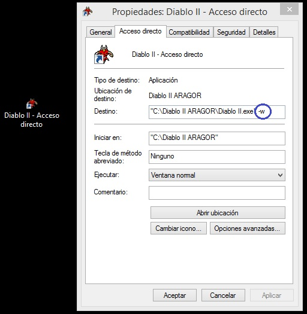

Para jugar con pantalla completa, tienes que hacer clic derecho en el icono de Diablo II con el que ingresas usualmente, clic en Propiedades y aparecera la siguiente ventana:  Para jugar con la pantalla completa en la seccion "Destino", eliminar lo siguiente "-w" Si buscas jugar nuevamente con la pantalla reducida, añadir lo siguiente: "-w"
Sucede que el MapHack no es propio de Aragor, entonces ocurren conflictos cuando se activa el MapHack en los mapas nuevos, propios de Aragor. Se recomienda desactivar el MapHack antes de ingresar a los mapas nuevos.
En el area "Guarida de la Amazona", a la que se ingresa a través de Sotano de la Torre Olvidada Nivel 5, ocurren errores cuando se acumulan muchos monstruos, lo mas recomendable es atacarlos desde lejos y luego recojer las cosas. Al ser un mapa nuevo, también se recomienda cerrar el MapHack momentaneamente.
Ocurre que cuando un usuario tiene otras versiones de Diablo II, y por consiguiente otros MapHack, luego de jugar una version y no cerrar correctamente el MapHack causará que Daiblo II Aragor no pueda ejecutarse hasta que se cierre dicho MapHack.
Puedes jugar en diferentes servidores, por eso se recomienda tener dos carpetas con cada version de Diablo II en cada una.
Eso sucede cuando Diablo II a pesar de haber sido cerrado en otro momento, aun sigue ejecutandose. La practica mas adecuada es ir a Administrador de Tareas y buscar el proceso llamado "Diablo II" y cerrarlo. A veces puede que no se ejecute, entonces prueba reiniciando que así varios han podido resolver el problema.